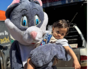
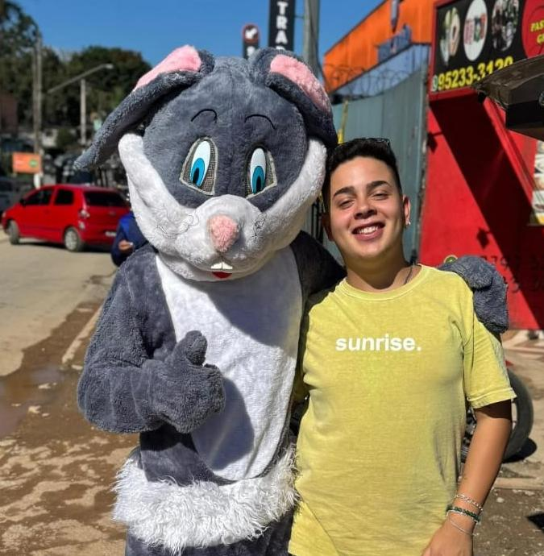
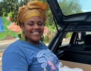
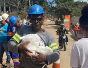
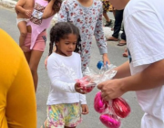
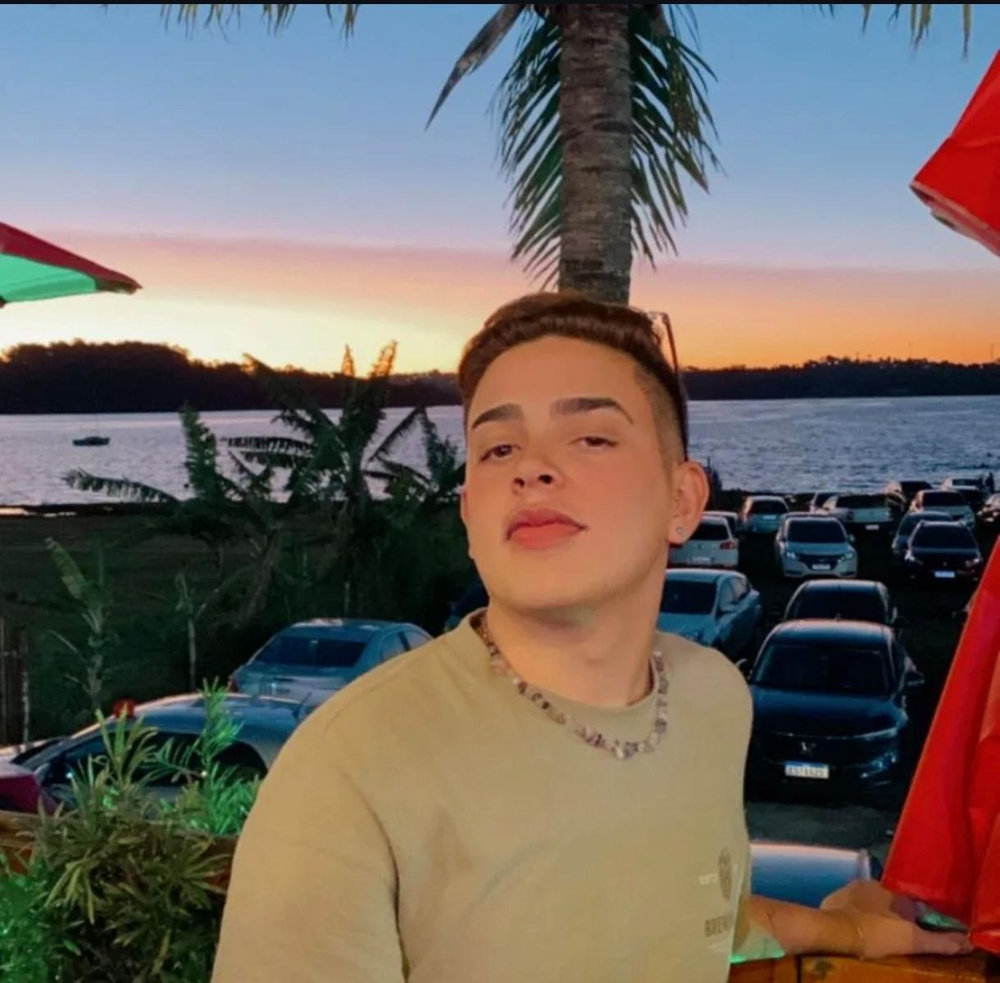
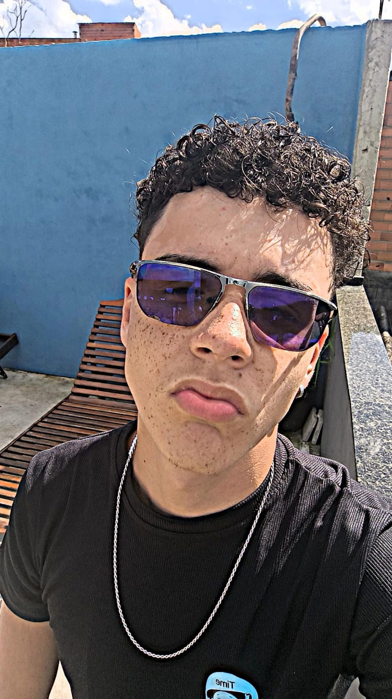
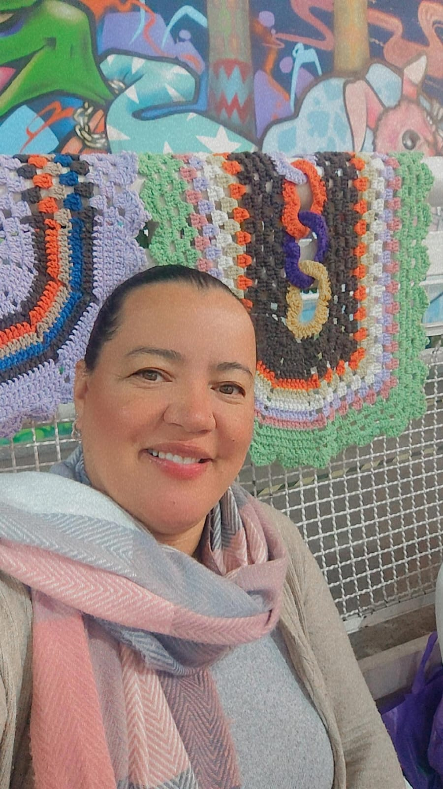

PÁSCOA
Ações que levam a esperança e o cuidado para quem precisa.

Nossa missão é levar luz, dignidade e apoio às famílias em vulnerabilidade social. O projeto Girassol nasceu para transformar vidas com amor e solidariedade.




Cada participante do Projeto Girassol é uma luz que fortalece nossa missão: juntos, unimos forças para proteger a vida e cultivar esperança para as futuras gerações.

Guilherme (fundador)
Andrew
Karla